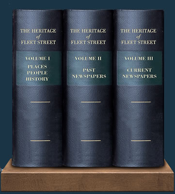

| The Fleet Street Heritage Project is aiming to produce 100 information pages/webpages about many aspects of the heritage of Fleet Street, including some of the people, places and ideas which have contributed to its rich history, and also mini-biographies of many of the current and ancient newspapers printed here. |  |
So far, we have written 62 of these pages, as listed in the first 3 panels below. Many of these have been written by volunteers; if you would be interested in writing on any other subject, whether on our Future Plans list or not, please fill out our contact form And if you have any comments on individual pages, or additions you would like to suggest to them, please click here We also welcome feedback on our website.
|
|
Volume 1 -
People, places, monuments, history and ideas
|
The Telegraph Sunday Times The Times |
Sun Financial Times |
Daily Mail The Independent |
|||
|
____________________IN
PREPARATION____________________
|
|||||
|
Reuters Salisbury Square Whitefriaars Monastery |
Temple Church Inner Temple A Compositor's Work Workers Dreadnought | Independent Daily Express Evening Standard |
|||
|
____________________FUTURE
PLANS____________________
|
|||||
|
Fleet Street Quarter Fleet Street in the 1700s Fleet Street in the 1800s Fleet Street in the 1900s Fleet Street in the 2020s |
|
Daily Mirror |
|||